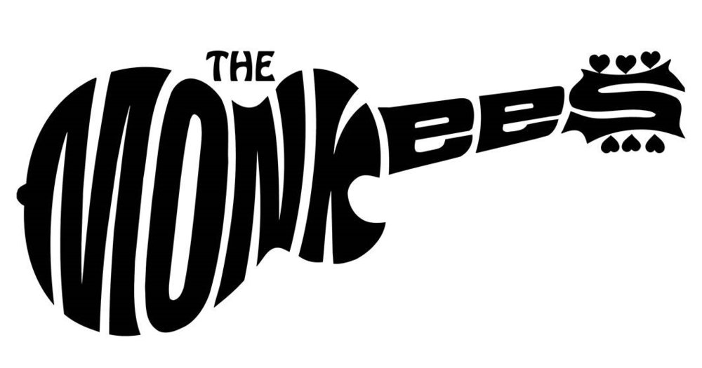

The Monkees are an 1960’s rock band and have around 50 years experience of performing live at numerous events around the world. They were formed in Los Angeles in 1965 by Bob Rafelson and Bert Schneider for the American television series The Monkees. The band members are Micky Dolenz, Michael Nesmith, Peter Tork and Davy Jones.